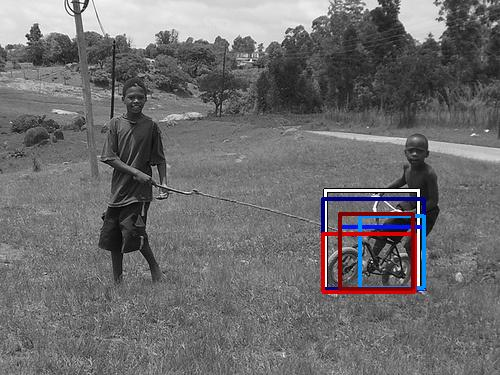
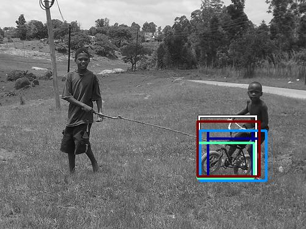
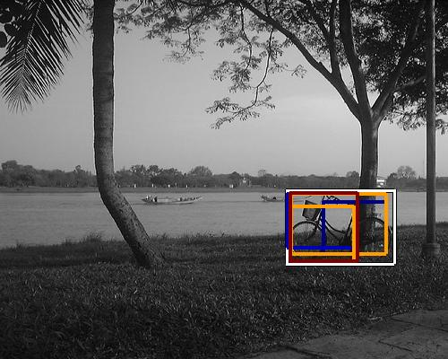
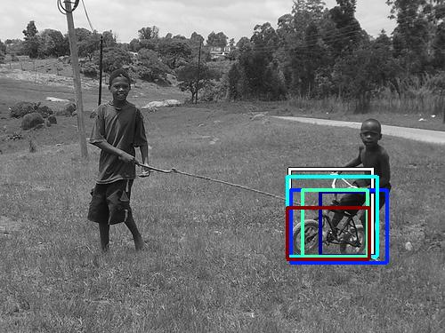

0.417984

0.435615

0.444748

0.507707

0.521752

0.542344

0.550986

0.570842

0.572651

0.575259
| Target image | 0.417984 | 0.435615 | 0.444748 | 0.507707 | 0.521752 | 0.542344 | 0.550986 | 0.570842 | 0.572651 | 0.575259 |
| Target image  |  8938.439453 |  8815.475586 |  6990.715820 |  6003.556641 |  4824.595703 |  4777.298340 |  4448.520996 |  4141.123047 |  3979.672852 |  3903.653809 |
| Target image  |  4022.713135 |  3248.379395 |  2898.906738 |  2842.417969 |  2667.094238 |  2555.125244 |  2520.406006 |  2121.853271 |  2034.914551 |  1976.086914 |
| Target image  |  17037.607422 |  13312.591797 |  10531.759766 |  9623.789062 |  8880.574219 |  7845.582031 |  6596.475098 |  6408.904785 |  5757.313477 |  5568.394531 |
Target image |  18451.345703 |  13248.451172 |  8482.177734 |  7487.465820 |  6966.226562 |  5937.749512 |  5818.266113 |  5462.159668 |  5449.277344 |  5342.795898 |